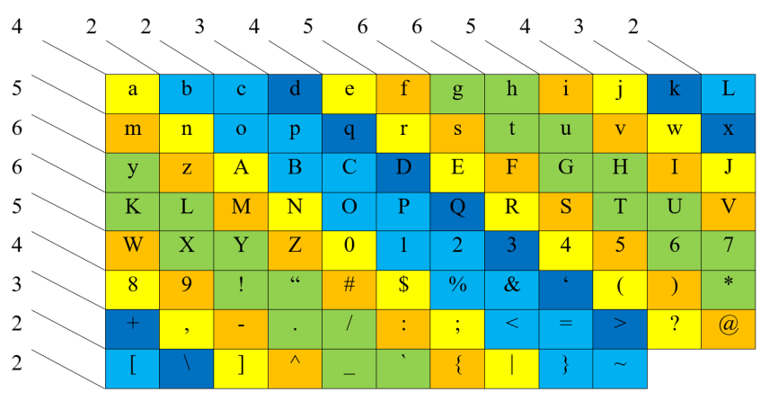

Greetings! I am thrilled to welcome you to my portfolio. I am currently a dedicated and passionate B.Tech student pursuing Information Technology at Sikkim Manipal Institute of Technology. With an insatiable curiosity for the world of technology, I am on a relentless journey to explore and harness its vast potential.
One of the most captivating aspects of my academic journey has been my proficiency in programming languages. My repertoire includes C, C++, Java, and Python, which serve as my tools to craft innovative solutions and bring my ideas to life. Beyond just coding, I possess a keen interest in the realm of Artificial Intelligence and Machine Learning, where I've been honing my skills to develop intelligent systems that can drive transformative change.
I am a well-rounded individual who values holistic development beyond academics. As the General Secretary of the Forum2k club, I've honed organizational skills and cultivated a lively tech community. Outside the digital realm, I hold a diploma in arts from Assam Fine Arts and Craft Society, channeling my creative energies. A 6-year boxing journey at Sports Authority of India instilled discipline, resilience, and a focus on holistic well-being. My leadership roles in managing events at Cotton University further polished my versatility, enhancing teamwork, communication, and problem-solving abilities.
In a world that thrives on innovation, I am driven to push my boundaries, challenge conventions, and make a meaningful impact. With a unique blend of technological prowess, artistic flair, sportsmanship, and leadership acumen, I am poised to embark on endeavors that contribute positively to society and the ever-evolving tech landscape.
[Human Activity Recognition]
WiFi based Human Activity Recognition
[Encryption and Hash Algorithm]
Orginal Encryption and Hash Algorithm
[Multifactor-Auth System]
Multifactor Authrntication system using totp
[Text Summarization Software]
Text summarization software using openai's api and tkinter
[Asteroids 1979 Atari Game]
The 1979 Atari game 'Asteroids' using JavaScript
[Twitter Trend Context Generator]
Twitter trend context generator using twitters api and openai's api
Human Activity Recognition
To check out the published paper, click here!
Dataset and Experiment Setup
This project focused on human activity recognition using wireless signal characteristics, specifically the Channel State Information (CSI) data. The dataset used in the experiment consisted of CSI values corresponding to six activities: walking, jumping, falling, doing nothing, clapping, and waving. The experimental setup involved a transmitter and receiver placed 250 meters apart in a line of sight configuration. The CSI data underwent preprocessing, including reformatting the matrix and truncating it to ensure uniformity across all samples.
Model Training and Performance Assessment
Convolutional neural network (CNN) and Squeezenet models were trained using the preprocessed CSI data for activity classification. Performance evaluation was conducted using metrics such as F1 score, true positives, true negatives, false positives, and false negatives. The results demonstrated the effectiveness of the CNN and Squeezenet models in accurately classifying human activities based on the CSI data. However, the limitations of the project included a limited activity set, a relatively small dataset, and a line of sight configuration.
Effective Recognition with CNN and Squeezenet
The CNN and Squeezenet models effectively extracted meaningful features from the input data, capturing essential patterns and representations. The subsequent fusion of these features through concatenation allowed the SVM to make highly accurate predictions. The achieved validation accuracy of 98.80% demonstrates the successful integration and synergy between deep learning and traditional machine learning approaches. This project highlights the potential for combining multiple models and techniques to enhance classification performance, particularly when dealing with complex datasets.

The classifier (SVM), now trained, utilizes the combined features to classify the validation data. By leveraging the learned patterns and relationships in the concatenated feature data, the SVM classifier can accurately predict the corresponding gestures or activities. Overall, this process involves data extraction, pre-processing, data splitting, individual training of CNN and SqueezeNet models, feature concatenation, SVM training, and finally, the classification of new data using the trained SVM classifier.
Promising Future Directions
While the project yields exciting results, there's an array of avenues for future exploration. Expanding the activity set, amassing a more expansive and diverse dataset, exploring other wireless signal characteristics, incorporating multi-modal data, and implementing the models in real-time systems are all potential enhancements. These endeavors would contribute to the advancement of non-intrusive and cost-effective approaches to human activity recognition, with applications in surveillance, healthcare, and smart environments.
A Seamless Fusion of Innovation
The results of this project also contribute to the understanding and development of robust classification systems, where deep learning models can be effectively combined with traditional machine learning algorithms to improve accuracy and provide more reliable predictions. This project showcases the potential of using wireless signal characteristics, specifically CSI data, for human activity recognition. The findings offer valuable insights into creating more perceptive environments, while maintaining data integrity and security.
Encryption and Hash Algorithm
Character Substitution: Personalized Encryption
This project introduces an innovative encryption technique that revolves around character substitution. Each character in the data is meticulously replaced with a unique random value. These values vary in length, effectively enhancing the complexity and unpredictability of the encryption. Importantly, this substitution process ensures that no two characters share the same sequence, thus offering a formidable and personalized encryption mechanism.
The Encryption and Hash Function Duo
At the core of this project lies a two-step encryption strategy that combines the power of character substitution and advanced hash functions. The first step involves the multiplication of the data by specific prime numbers, followed by modulo operations. This process generates a distinct and secure representation of the data. In the second step, these generated hashes are combined using the XOR (^) operator, fortified by multiplication with another set of prime numbers. This intricate operation enhances the security and randomness of the encryption.
Advanced Bitwise Operations for Ultimate Security
To elevate the encryption's potency, a series of advanced bitwise operations are employed. These include right-shifting the combined hash value, multiplication by significant prime numbers, and further XOR operations with right-shifted versions. This intricate dance of bitwise operations results in an encryption mechanism that is not only complex but also highly secure, effectively deterring even the most sophisticated decryption attempts.
Your Data is the Priority
In a world where data breaches are a constant threat, the Secure Data Encryption Project stands as a beacon of innovation and security. This methodology seamlessly integrates creativity and mathematical precision to deliver an encryption process that offers unparalleled peace of mind. Whether it's safeguarding sensitive user information, confidential business data, or personal documents, this project ensures that your data remains confidential, intact, and impervious to prying eyes.
Promising Future of Encryption
This project is merely a glimpse into the potential of encryption. As technology evolves, expanding the horizons of activity sets, incorporating diverse datasets, and exploring real-time encryption scenarios is the goal. This Project aims to not only secure your data but also pioneer the realm of information protection through ingenious methodologies.
A New Era of Data Security
The Project demonstrates the harmonious fusion of technology and innovation to fortify data security. It blends character substitution, advanced hash functions, and intricate bitwise operations to create an encryption mechanism that ensures data confidentiality, integrity, and security. Embrace the power of the algorithm and embark on a journey towards a safer, more secure digital landscape.
Multifactor-Authentication System
Project Objectives
The aim of my project is to design and implement a multifactor authentication system for websites. This system aims to fortify the security of websites by adding an additional layer of authentication beyond the conventional username and password. The added layer might include biometric authentication, such as facial recognition or fingerprint scanning, or the utilization of time-limited one-time passwords sent to users' mobile devices. The ultimate goal is to create a more resilient defense against unauthorized access attempts and provide users with a secure online environment.
Challenges Addressed
The problem at hand lies in the growing vulnerability of traditional authentication methods to hacking and cyber threats. Hackers exploit various tactics like phishing or brute force attacks to compromise login credentials, thereby jeopardizing sensitive user data. This calls for a heightened security layer that is significantly harder for hackers to bypass. However, this enhanced security should not come at the cost of a convoluted user experience. Thus, the challenge is to create a multifactor authentication system that merges robust security with user-friendliness.
Project Methodology
My approach involves a well-structured algorithm that encompasses various stages:
- User Interface and Webpage Development: The project begins with crafting a user interface and developing essential webpages such as login, registration, dashboard, and error pages.
- Backend Development: A backend is established to support webpage functionality and facilitate necessary operations.
- Database Setup: A database is created to securely store user credentials.
- Encryption and Hashing: An encryption algorithm is devised to protect user passwords. This encrypted data is then subjected to hashing, rendering it unreadable and secure.
- Secondary Authentication: The project integrates an additional authentication factor through Time-based One Time Passwords (TOTP). This generates unique time-limited codes, bolstering security.
- Optimization and User Experience Enhancement: Both the backend and user interface are refined for better performance and a seamless user experience.
Implementation Highlights
Several noteworthy aspects characterize the project's implementation:
- The project entails the creation of basic HTML and CSS-driven user login, registration, and error pages.
- The login validation process checks for existing usernames and verifies matching passwords from the database.
- User-friendly redirections occur based on validation results, ensuring smooth navigation.
- Encryption and hashing mechanisms are employed to protect sensitive password data, ensuring it remains secure even in the face of database compromises.
Future Prospects
While this project represents a significant advancement in website security, future endeavors could explore a wider range of secondary authentication methods. These may involve additional encryption and hashing techniques, as well as the continual refinement of the user experience. Such developments will bolster the system's resilience and adaptability against emerging cyber threats.
Ushering in a New Era of Website Security
The Multifactor Authentication System project showcases the fusion of innovative technology with security imperative. By elevating security measures while maintaining user convenience, this project offers a glimpse into a safer digital future. With the potential to reshape online interactions and protect sensitive data, the Multifactor Authentication System project is a stride towards a more secure and trusted online landscape.
Text Summarization Software
Project Vision
In my project, I have developed a cutting-edge text summarization software using the power of Tkinter and the OpenAI API. The software's main objective is to provide users with a streamlined way to extract essential information from lengthy texts. By leveraging advanced AI techniques, this tool is designed to summarize articles, documents, and paragraphs, delivering concise and coherent summaries that capture the core essence of the original content.
Addressing the Need
The need for efficient text summarization is evident in today's information-rich world. As the volume of textual data continues to grow, it becomes increasingly challenging for individuals to sift through extensive documents to extract key insights. By automating the summarization process, this software addresses the issue of time-consuming manual reading while enabling users to quickly grasp the most crucial information.
Project Components
The software is crafted through a two-fold approach:
- Tkinter User Interface: The project begins with the development of a user-friendly graphical interface using Tkinter. This intuitive interface allows users to input the text they wish to summarize.
- OpenAI API Integration: The core functionality of the software is powered by integrating the OpenAI API. This API leverages advanced natural language processing models to generate concise and coherent summaries that capture the essence of the input text.
Implementation Highlights
Several key features characterize the software's implementation:
- Input Flexibility: Users can input text from various sources, including articles, documents, and paragraphs.
- Summarization Speed: The software provides rapid summarization, delivering key insights in a fraction of the time it would take to manually read through the entire text.
- Output Customization: Users have the flexibility to customize the length of the summary, allowing them to tailor the output to their specific requirements.
- Language Support: The OpenAI API supports multiple languages, enhancing the software's versatility and accessibility.

Future Prospects
While the current implementation is undoubtedly impressive, the project's future potential is equally promising. Future enhancements could involve refining the summarization algorithms, expanding language support, and optimizing the user interface to provide an even more seamless experience. Additionally, integration with other AI technologies for enhanced text analysis could be explored.
A Glimpse into the AI-Powered Future
The Text Summarization Software is a testament to the integration of AI-driven automation into everyday tasks. By harnessing the capabilities of Tkinter and the OpenAI API, this project showcases the immense potential of technology in transforming how we extract and comprehend information. As we move forward, this software sets the stage for more advanced and intelligent tools that aid us in navigating the vast sea of information with precision and efficiency.
Asteroids 1979: Reviving Classic Gaming with HTML and JavaScript
Project Overview
In this project, I pay homage to the iconic 1979 Atari game "Asteroids" by recreating it using HTML and JavaScript. The main goal is to bring the nostalgia of this classic arcade game to modern browsers while retaining its original essence and gameplay. Players can relive the thrill of maneuvering a spaceship, blasting asteroids, and dodging debris, just like in the original masterpiece.
The Nostalgic Challenge
The objective is not just to recreate the game, but to capture the spirit and excitement that made "Asteroids" a timeless favorite. By emulating the simplistic yet addictive gameplay, I aim to provide both enthusiasts and newcomers with an opportunity to experience the magic of classic gaming.
Technical Implementation
The project is built upon a foundation of HTML and JavaScript:
- Canvas Element: I employ the HTML5 canvas element as the game's graphical rendering surface. This versatile element allows for dynamic graphics and animations.
- JavaScript Logic: The game's functionality is driven by JavaScript. I implement algorithms for spaceship movement, asteroid generation, collision detection, and score tracking.
Game Mechanics
The game retains the core mechanics that made "Asteroids" legendary:
- Spaceship Control: Players can steer the spaceship using arrow keys and accelerate using the up key.
- Asteroid Chaos: Asteroids of varying sizes spawn on the screen. Players must shoot and destroy them to score points.
- Collision Danger: Colliding with an asteroid leads to ship destruction. Players have limited lives, adding a sense of challenge and urgency.
Future Possibilities
While this project successfully brings the 1979 "Asteroids" to modern browsers, the journey doesn't end here. Future developments could include enhancing graphics, introducing additional power-ups or challenges, and optimizing gameplay for mobile devices.
A Blast from the Past, in the Present
The "Asteroids 1979" project showcases the fusion of retro gaming nostalgia with modern web technology. By recreating the gameplay, excitement, and challenges of the original Atari classic, this project offers a portal to the golden age of arcade gaming. As the spaceship navigates through a sea of asteroids, it also bridges the gap between the past and the present, reminding us of the timeless joy that games can bring.
Twitter Trending Tags Context Generator: Unveiling Insights with AI and Social Media
Project Vision
In this visionary project, I introduce the Twitter Trend Context Generator, a powerful tool that harnesses the capabilities of Twitter's API, OpenAI's advanced language processing, and the vastness of social media trends. The objective is to provide users with a comprehensive understanding of the latest Twitter trends by fetching real-time trend data, analyzing related tweets, and generating meaningful context around those trends using AI-driven insights.
Contextualizing Trending Topics
The project addresses the challenge of deciphering the significance behind trending topics on Twitter. Often, users encounter trends without fully comprehending the underlying context. This tool aims to bridge that gap by presenting users with insightful narratives about trending topics, enabling them to engage with trends more meaningfully.
Project Components
The Twitter Trend Context Generator combines the powers of APIs and AI:
- Twitter API Integration: The tool utilizes Twitter's API to fetch current trends. This real-time data acquisition provides the foundation for generating context.
- Tweet Collection: The system collects the most recent tweets associated with each trend, creating a dynamic dataset for analysis.
- OpenAI Language Processing: The collected tweets are processed through OpenAI's language models. This AI-driven analysis uncovers insights, sentiments, and trends within the tweets.
- Context Generation: The tool generates coherent context for each trend, summarizing the essence of the trend and offering insights into the conversations surrounding it.
Implementation Highlights
The project boasts several key features:
- Real-time Insights: Users gain real-time insights into trending topics, enhancing their grasp of current events.
- Natural Language Understanding: OpenAI's language models delve into the tweets, unveiling sentiments, opinions, and emerging patterns.
- Engaging Narratives: Generated context offers engaging narratives, connecting users to the heart of the trend.
- User-Friendly Interface: A well-designed interface presents trends and context in an accessible manner.

Future Possibilities
The project's potential for growth and enrichment is immense. Future endeavors could include sentiment analysis, more diverse language models, and real-time visualizations of trend-related data.
Empowering Users with Insights
The Twitter Trend Context Generator is a testament to technology's capacity to empower users with relevant insights. By merging the dynamism of social media with the intelligence of AI, this project opens a window to the trending world and provides users with the tools they need to comprehend and engage with the ever-evolving landscape of Twitter trends.
- AI/ML (Convolution Neural Network, Signal Processing, Image Processing)
- Data Structures and Algorithm (C++)
- GUI Design (tkinter, PyQt5)
- Familiar with AI/ML Python libraries (Tensorflow, OpenCV, Scikit-learn)
- Database and Management System (SQLite3, SQL)
- C / C++
- Python
- Java
- HTML / CSS / JavaScript
- MySQL